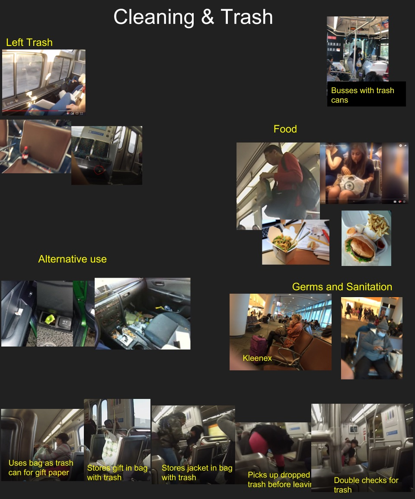
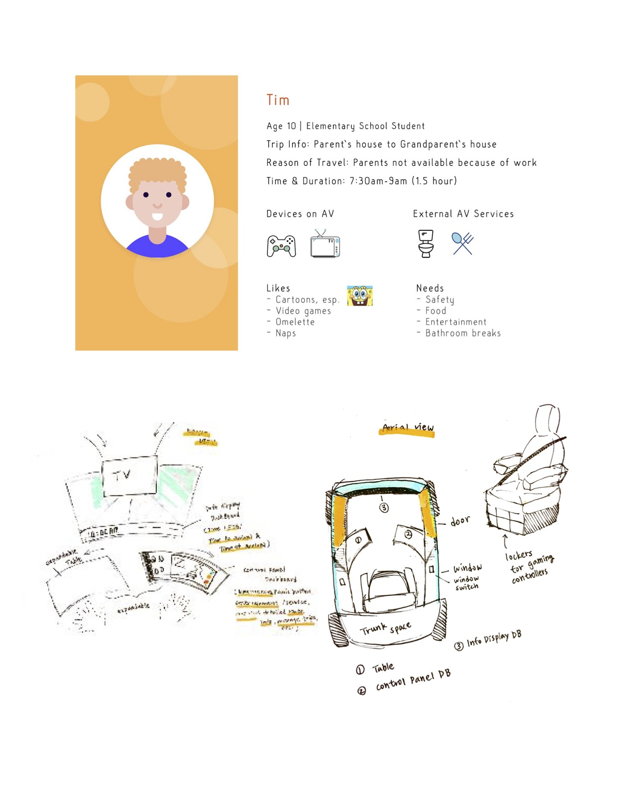

From October 2018 to January 2019, I had the good fortune of being chosen for a highly selective internship at UC San Diego.
The project took place at the UCSD Design Lab, founded by renowned design pioneer Don Norman. The purpose of the project was to design in-transit activities for autonomous vehicles (AVs), in collaboration with Hyundai Motors.
This was a large project, involving more than thirty students and staff, and I was involved in every step of the design process. This included some work in large groups, some in small groups, and some aspects in which I operated individually.
By the end of the project, we had arrived at a set of working scenarios delivering our collective vision for possible implementations of an interior of an autonomous vehicle that supports specific different activities depending on the user. One example below shows a young boy traveling alone, and a possible design for an AV that would support his travel.
To arrive at the point of a deliverable product, we worked through an iterative design process that recursively cycled through the following steps:

Our first step was simply observing without predetermining what we were looking for. Above is a photo I took while observing people waiting in the airport. Seemingly simple moments can offer a good deal of interesting information when considering possible design implications of the observation.
Here I first noticed that the father and daughter are both using mobile technology. While our group didn’t necessarily need observation to know this, it was striking how common and constant this behavior is. Clearly, good AV design should take this into account.
Second, I noticed that one child is in the father's lap. While this might not be ideal for AVs for safety reasons, it is certainly worth noting that this is something families do and would likely wish to do in a vehicle.
Third, I noticed that the daughter is trying to show her screen to the father. Early conclusion: an AV should probably have a seating arrangement that supports activity sharing.
Next, we took the images we had individually collected and consolidated them to identify patterns. I had a major role in this aspect of data synthesis. Our goal now was to create an understanding of what people do in-transit. Many images were taken on the San Diego Metro. I collected observations in airports, on Uber rides, and of people arriving on campus. We chose to conduct the majority of observations away from privately owned cars, because we wanted to design for the activities people might do in the autonomous cars of the future, things that people are not currently able to do, and did not want to bias our view of the possible.


As with any group of individuals working toward a common goal, there were organizational challenges. I played a key role in thinking about and managing our process so as to optimally balance creativity and efficiency, and coordinate the various aspects of a large project.
I take greatest pride in this aspect of the project, when it was time to take observations and begin coming up with ideas of different ways that people might wish to use the interior of an AV. Some different examples included: [Abie write 3-5 things]
At this point in the project I was inspired to think through my own new understandings of what does and does not make sense for autonomous vehicles. This was not a formal aspect of the project, but work I did on my own initiative to organize my thinking.
Ultimately, our group was able to land on multiple scenarios for the interior of autonomous vehicles. Here is a full example scenario we crafted, to showcase some of the features we were designing.


I learned a good deal working on this project, and am grateful for the opportunity the internship provided to learn observation and design skills, as well as organizational thinking and team participation. I have a greater appreciation of the challenges and rewards of the iterative design process.